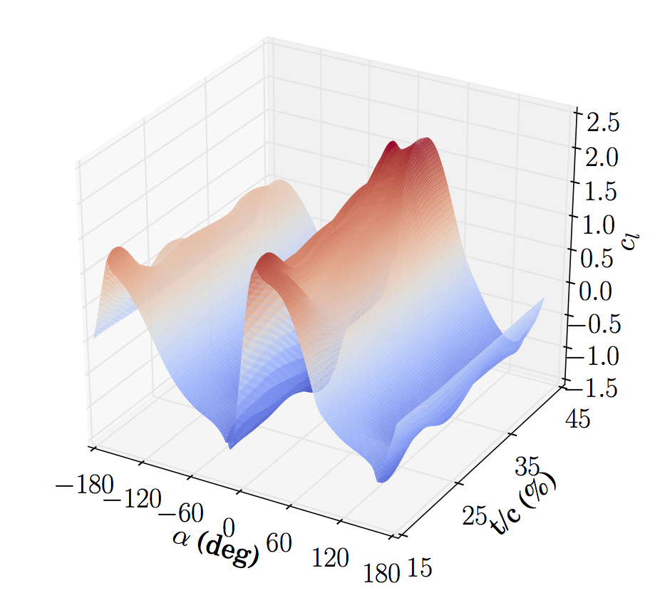
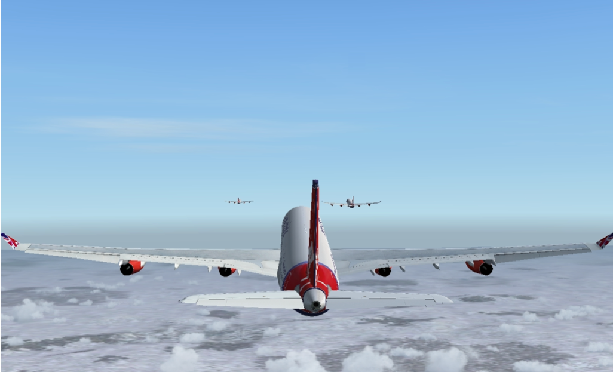

Research
Current Projects
Wind Farm Optimization Under Uncertainty
Effective wind farm optimization involves a large number of design variables and contains many sources of uncertainty (e.g., wind direction, wind speed, turbulence levels, wake model parameters, etc.). We are developing scalable methods for large-scale optimization, uncertainty quantification, and optimization under uncertainty and applying these methods to advance energy sustainability through improved wind farm performance.
- Sponsor: National Science Foundation
- Co-PI: Juan Alonso (Stanford)
VAWT Wake Model Development

Vertical axis wind turbines (VAWTs) are a promising technology for offshore applications and in the built environment. Performance of wind farms is highly dependent on effective integration, and this research is focused on developing engineering wake models for VAWTs to enable farm optimization.
- Students: Eric Tingey, Nick Bons (graduated), Dagan Pielstick
- Sponsors: Internal seed grant (MEG Grant)
Integrated Wind Farm Layout Optimization

Efficient layout design is a significant challenge, and today’s wind farms underperform energy capture expectations by around 10-20%. We seek to efficiently combine turbine, layout, and controls optimization in an integrated manner. Recent work has compared the impact of two different wake models on optimization and conducted initial studies in combined layout-yaw optimization
- Students: Jared Thomas
- Sponsors: National Renewable Energy Laboratory
- Collaborators: Pieter Gebraad, Paul Fleming, Katherine Dykes
Free-form Aerostructural Rotor Design

By free-form design we mean simultaneous airfoil and blade design as opposed to the traditional sequential approach. We are exploring free-form design through a range of fidelities. Initial studies have been helpful in quantifying expected benefits.
- Students: Ryan Barrett
Acoustic Impacts on Wind Farm Layout

Acoustics can play an important role in wind farm design and we are interested in understanding its impact through optimization and in developing better acoustic models for wind farms.
- Students: Eric Tingey
Passive-Flow Control Devices for Low Reynolds Number Propellers
We are conducting wind tunnel tests to characterize performance of novel UAV propeller concepts.
- Students: Kevin Moore
Unmanned Aerial Vehicle Trajectory Optimization
Robust UAV trajectory optimization is steeped with challenges including static and dynamic obstacles, performance variability, uncertain environmental conditions, component failures, etc. We are exploring convex optimization approaches, exploratory gradient-based approaches, and UAV aerodynamic performance modeling.
- Students: Matt Duffield (Tim McLain is his primary advisor), Bryce Ingersoll, Taylor McDonnell
- Collaborators: Tim McLain
Quantitative Characterization of Essential Tremor for Future Tremor Suppression
Essential tremor (ET) is one of the most common movement disorders, estimated to affect 1 - 12 million people in the US. We are developing optimization models in collaboration with the BYU Neuromechanics Research Group to help establish the mechanical origin of the tremor.
- PI: Steven Charles
- Collaborators: Jon Blotter, Andrew Ning, Mark Hallett
- Sponsor: National Institute of Health
Past Projects
Wind Turbine Design Optimization and Tool Development (Postdoc at NREL)
 Efficient extraction of wind energy is a complex, multidisciplinary process. We have developed a number of open-source integrated wind turbine analysis tools as part of the WISDEM toolset. Many of these tools provide exact gradients through automatic differentiation and/or adjoint methods. During the development a new methodology for solving the blade element momentum equations was developed with guaranteed convergence---useful for use with gradient-based optimization. These models have been in studies to understand the impact of using different objectives in wind turbine optimization, analyze the impact of high-tip speed rotors, compare optimized downwind and upwind turbines, and study the benefits of mixed-derivatives in wind turbine optimization.
Efficient extraction of wind energy is a complex, multidisciplinary process. We have developed a number of open-source integrated wind turbine analysis tools as part of the WISDEM toolset. Many of these tools provide exact gradients through automatic differentiation and/or adjoint methods. During the development a new methodology for solving the blade element momentum equations was developed with guaranteed convergence---useful for use with gradient-based optimization. These models have been in studies to understand the impact of using different objectives in wind turbine optimization, analyze the impact of high-tip speed rotors, compare optimized downwind and upwind turbines, and study the benefits of mixed-derivatives in wind turbine optimization.
- Collaborators: Katherine Dykes, Rick Damiani, many others ...
- Sponsor: Department of Energy (this work occurred while I was an NREL employee)
Formation Flight (Ph.D. at Stanford)
 We explore a safer approach to formation flying of transport aircraft, which we term extended formation flight. Extended formations take advantage of the persistence of cruise wakes and extends the streamwise separation between the aircraft by at least five wingspans. At large distances, considerations such as wake rollup, atmospheric effects on circulation decay, and vortex motion become important to consider. We examine the wake rollup process in the context of extended formations and develop appropriate physics-based models. Our research address multiple aspects of formation flight: longitudinally extended formations, compressibility effects, formations of heterogeneous aircraft, and formation route optimization.
- Collaborators: Mike Aftosmis, Marian Nemec, James Kless
- Sponsors: NDSEG Fellowship, Airbus